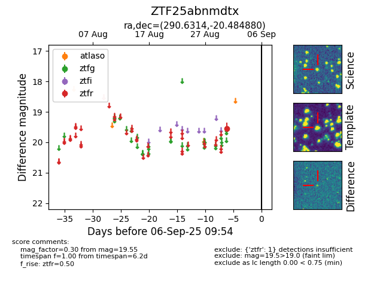

FINK: ZTF25abnmdtx
Lasair: ZTF25abnmdtx
ALeRCE: ZTF25abnmdtx
ZTF25abnmdtx (ztf,fink)
equatorial (ra, dec) = (290.6314,-20.48488)
galactic (l, b) = (17.6445,-15.80227)

last ztfr=19.55
1 ztfr detections